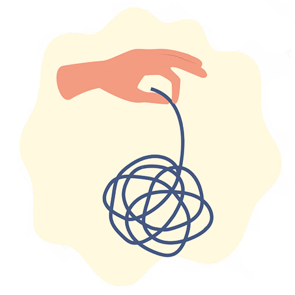
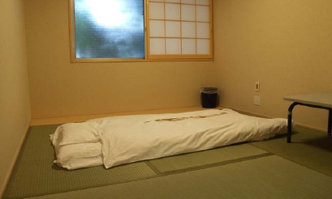

森田療法は、1919年に我が国の精神科医、森田正馬によって創始された神経症に対する精神療法です。森田療法は、対人恐怖や広場恐怖などの恐怖症、強迫神経症、不安神経症（パニック障害、全般性不安障害）、心気症などが主たる治療の対象であり、これまでに高い治療効果をあげてきています。また最近では、慢性化するうつ病やガン患者のメンタルケアなど、幅広い分野に有効と言われています。
森田療法の治療の対象と形態について
1.対象
森田療法の治療の対象は、神経質傾向をもつ、
- 不安症全般（社交不安症、広場恐怖症、パニック症など）、強迫症、慢性化したうつ病
- 心身症（過敏性腸症候群、アトピー性皮膚炎、慢性疼痛、舌痛症など）、
- がん患者のメンタルヘルスケアなどの方々が対象になります。ただ、原則として躁病や統合失調症は適用にはなりません。
2.治療の形態
森田療法には、大きく「入院療法」と「外来療法」の2つがあります。元来、森田療法の基本は、入院療法ですが、入院先などの減少問題もあり、最近では通院治療（＝外来療法）が中心になっています。
したがって重度や長期の方には入院療法、比較的軽度で短期の方には、通院による外来療法が基本となっています。
入院療法
入院療法は、第1期〜第4期までの治療期間で構成されています。
1.第1期（絶対臥褥期）
絶対臥褥（ぜったいがじょく）期ともいい、約1週間患者さんは終日個室に横になったまま過ごします。食事、洗面、トイレ以外は一切の気晴らしは禁じられます。あらかじめ患者さんは「不安や症状は起こるままにしておく」よう指示されます。
最初の1〜2日は心身の安静が得られますが、3日〜5日目頃には過去や将来に様々な連想が広がり、しばしば強い不安や苦悩に襲われるようになります。この時に不安をそのままに堪え忍んでいると、悩みが急速に消失することもあり、これを森田療法では「煩悩即解脱」と呼んでいます。
その後6〜7日目には退屈を感じて心身の活動欲が高まってきます。これがその後の治療の足がかりとなるのです。

東京慈恵会医科大学附属第三病院の臥褥専用の和室写真
2.第2期（軽作業期）
軽作業期と呼ばれ、4日〜1週間程度の期間です。心身の状態を多少欲求不満状態において、活動欲を促すことが目的とされます。患者は庭に出て外界の観察を行い、徐々に軽い仕事をしていくのですが、作業に関しては外から課すのではなく、自発的に気づいた事に向かわすのが原則です。
またこの時期から日記指導を行い、週に1〜3回程度、主治医との個人面談も行います。この頃には不安が再燃したり、作業に疑問を抱いたりと心が揺らぎやすい時期にあたります。
この時に、不安や疑問をそのまま抱えながら体験を積み重ねるよう指導されます。
3.第3期（重作業期）
重作業期とも呼ばれ、1〜2ヶ月間程度、弾力的に設定されています。軽作業期とは違い、他の患者さんとの共同作業が大きなウェートを占めるようになります。具体的には、小動物の世話、園芸、木工や陶芸、料理など様々なものがあり、起床、配置、風呂掃除などの当番も分担します。
この時期の目的のひとつは、仕事に対する価値感情を棚上げにして、何にでも取り組み、達成感を体験することにあります。またこの時期はテンポのよい現実に即した臨機応変の態度も指導されます。
この過程は実践を通じて、患者さんの症状中心のあり方から事実に即した態度へと転換をはかることが目的となります。
4.第4期（社会生活への復帰）
第4期は社会生活への復帰期であり、1週間〜1ヶ月程度です。この時期は外出、外泊を含めて社会復帰への準備期にあてられ、事情に応じて院内からの通学、通勤なども許可されることもあります。
外来療法（通院治療）
外来療法では、導入時に、治療への動機づけとともに、症状を悪循環的に増強させている心理機制（とらわれの機制）を明らかにして、治療の目標を設定します。
具体的には、患者の症状を具体的に尋ね、神経症症状の根源にある不安や恐れは、よりよく生きたいという人間本来の欲望（生の欲望）と表裏の関係にあり、どちらも自然な人間心理の両面の事実であることに理解を導きます
不安や恐れを異常なもの、あってはならいものと考えて、それらを排除しようと努めた結果、却って不安や恐れが増して悪循環に陥っていることを説明し、「自分の性格に弱さがあるから」「自分がダメだから」と悩み、無力感にさいなまれる患者に、不安や恐れへのかかわり方が問題であったことを伝え、問題は「弱さ」や「だめだから」ではなく、悪循環ゆえであり、悪循環から抜け出すことで問題が解決するのだという治療の動機づけを行ないます。
この悪循環から脱するために、これまでのやり方とは異なる態度として、
- 第一に、「不安や恐れをやりくりするのではなく、そのままにしておく」ことを助言します。
- 第二に、「不安や恐れの裏にある生の欲望を、実生活において建設的な行動の形で発揮していく」ように促します。ようするに、心の状態はそのままに、なすべき生活、行動をなすことが、最終的にはあるがままの自分をよりよく生かしていくということが治療の目標になります。
導入時は、患者の不安や恐れの裏にある生の欲望を明らかにしていくことが課題でしたが、治療が進む時期には、実際の日々の生活の中で求めている「～したい」までを見出して、それらの欲望を建設的な行動を発揮し生活を充実させることを目指します。
導入時に悪循環について指摘をしますが、治療中でも患者の体験に即して、悪循環を明らかにしていきます。悪循環を明確にした上で、治療者は患者に生の欲望を建設的な行動に結びつけるように促します。患者は、「今悩んでいる不安や恐れがなくなってから取り組もうとしますが、治療者は、不安や恐れを抱えたまま、今できることから取り組むように助言」をしていきます。ここでのポイントは、生活を充実させるために、生の欲望にしたがって、広く多様な行動に踏み出すように促します。そして、大きな目標よりも今日実行できる小さな目標を立てるように助言します。「気分本位」、「症状本位」でなく「目的本位」な行動をするように助言します。
行動が拡がっていくと、本来の患者の生き方の「かくあるべき」といった姿勢が顕在化することがあります。治療者は、「かくあるべき」姿勢から脱却して「かくある事実に従って、臨機応変に対処する」ように助言し、これまでの生き方を問い直し、その人らしい生き方が実現できるように援助をしていきます。
治療の終結にあたっては、症状とそれに伴う苦痛が軽快しているか。生活・行動が変化しているか。あるがままの自分を受け入れてるかを振り返り、評価を行います。
外来治療では、面接と並行して日記指導を併用します。また森田療法の自助グループである、生活の発見会などの集団学習会を活用する場合もあります。
日記指導とは
日記は、1日の終わりに、落ち着いてその日を振り返り、事実を中心に書くことが基本です。感情や症状を記入しても構いませんが、そればかりにならいようにします。状況、行動などを読み手に分かりやすく書くことを心がけます。書くことによって、1日を冷静に振り返ることが出来ます。治療者は、日々の状況を詳しく知り、適切なアドバイスを行います。
また、伝統的な入院森田療法では臥褥期が終わり、軽作業期から日記療法を始めます。患者はその日の夕方に日記を記載し、次の日の朝に治療者に提出します。治療者は毎日それについて森田療法の立場からコメントを加えます。
【日記指導の意味と効果】
悩んでいる人にとって、その日の夕方に日記をつけるということは、その日の出来事を振り返り、みずから内省する契機となります。その人自身が主体的に自分の不安、感情を自分なりに受け止めて行こうとする態度を助長します。
治療者との日記を通したやりとりは、精神科面接、カウンセリングに匹敵するもので、自己理解を深め、不安などの感情を受け止め、それを消化し、自分のあり方を修正する原動力となります。
記録として残るので患者は治療者の日記のコメントを何回となく繰り返して読むことが可能となり、そこから十分時間をかけて自己修正ができます。
※参考文献：「気軽に行こう、精神科」中村敬著/白揚社
「よくわかる森田療法 心の自然治癒力を高める」中村敬著/主婦の友社
自助グループ
入院治療と外来治療の他に、それらの治療法と並行して利用したり、補助的に活用して効果をあげる、第三の活動として、相互扶助活動としての「生活の発見会」という自助グループがあります。
「生活の発見会」は、森田療法（理論）の相互啓発による学習とその実践を根幹にすえ、森田正馬先生の人間観などを共に学びながら、森田療法（理論）を日常生活に活かし、不安症（神経症）からの克服を支援する全国ボランティア組織です。
「生活の発見会」は、神経質や生きづらさに悩む人々に、自助活動を通じて共感と理解に基づく安心の場を提供し、森田療法理論を中心に共に学び合い、支え合って、とらわれからの開放とさらなる人間的な成長を目指しています。
活動の中心は、全国105ヶ所（2023年3月末現在）で月1回開催する”集談会”と呼ばれる「交流会＆学習会」です。
その他（会員制の掲示板）
当財団でも、メンタヘルス・心の体験フォーラムという会員制掲示板があります。対人恐怖や強迫観念、パニック発作、慢性うつ病などの神経症や不安症などに悩む方々の心のふれあいやコミュニケーションの場としてご利用していただくことを主旨として開設しています。「今、私はこんな神経症（不安症）で悩んでいる」又「私はこうして神経症を克服した」など、同じ悩みをもつ方々が、お互いに意見を交換し、励まし、アドバイスする場として、ご活用いただけます。